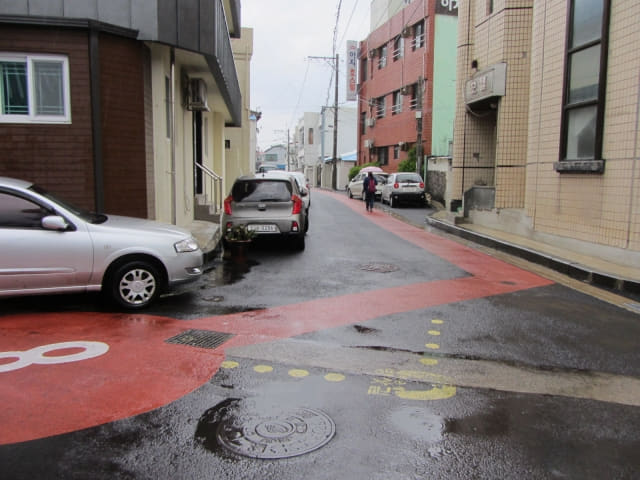
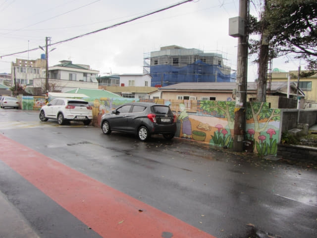

在濟州島羅波羅酒店吃完舒適豐富自助早餐, 乘電梯返回房間, 呆呆的望著窗外足足有半小時, 雨勢一直沒有放緩下來的跡象, 看看手錶, 已經是早上八昤四十五分, 是時候決定是否往龍頭岩了! 按計劃, 我們必須在早上十一時半前離開酒店往濟州港旅客碼頭, 現在只餘下不到三小時的時間, 要馬上決定了!
想到這是濟州島最後的一個行程, 不想放棄, 便決定馬上出發!
冒風雨走出酒店, 沿斑馬線走過馬路, 接著循濟州牧官衙旁的偶來18號小路走。
沿途都有偶來標誌引領前進。



在沿途經過的超級市場及屋簷下避雨, 好不容易才走了不到一半的路程。
沿途有很多漂亮的壁畫, 如果不是下雨天, 這是一條相當寫意的散步路線。
狂風大雨 步步為艱 被迫結束龍頭岩行程
來到一個十字路口, 感覺風勢越來越大, 便在一個建築中的屋簷下躲避。雨勢太大了, 又不時刮起大風, 相信越接近海邊, 風勢更大, 就決定在這裡結束龍頭岩這行程吧!
心有不甘 由我獨自走往龍頭岩
掉頭循原路走回酒店, 來到濟州牧官衙前的街道, 突然心有不甘, 明明龍頭岩離這裡不遠, 最後決定她返回酒店, 由我獨自走往龍頭岩。
不一會又返回壁畫村, 接著繼續沿偶來18號小路朝龍頭岩的方向走。


幸好沿途的偶來標誌十分清楚, 不用看地圖。
漢斗起 (한두기)海岸
走出小路, 迎面是一道長長的海堤, 來到一個名為漢斗起村的海岸, 這裡的風勢明顯更猛烈, 雨傘也接連的給吹翻。